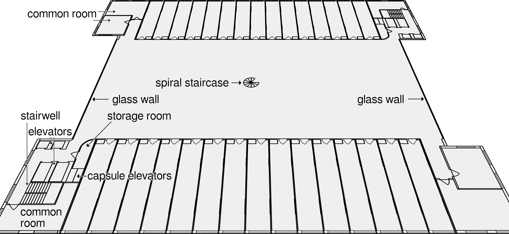
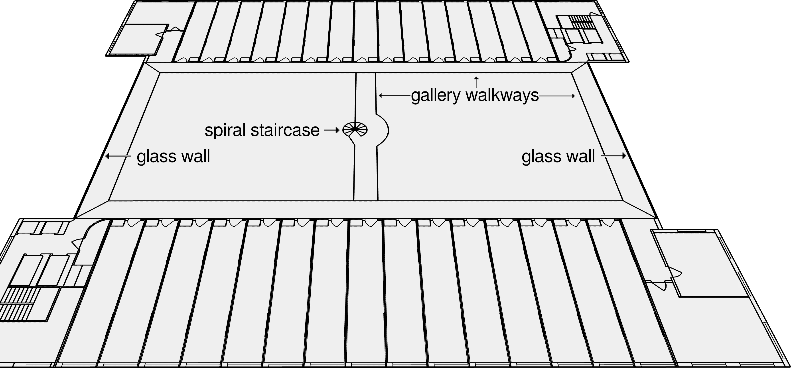

9. Living
9.2 Houses
With the capsulenet, we have already designed a new infrastructure that wouldn’t have been possible in earlier times. What other opportunities does modern technology offer us to build better than we could in previous centuries (when today’s cities and villages came into being)?
I see the following key advantages available to us today:
• We have much better materials research and structural engineering. Today, buildings can be made both much larger and much more stable.
• We can build underground much more affordably—both for foundations and basements, and for traffic tunnels.77
• We can connect people between buildings far more efficiently—both digitally (internet, phones, organizational software) and physically (transport networks, the capsulenet).
For my building design, I want to take advantage of the fact that we can build larger today than we could in the past. The advantages of building underground and connecting people more effectively will come into play in the next subchapter, “9.3 Cities”.
In 9.1, we just looked at the design for one floor of a small example house intended for container apartments.
The container house I’m presenting here is much larger, with base dimensions of 50m × 45m. Which actually seems too large for such a building (two containers are 26m long).
Dunbar’s number*: One core concept we will keep in mind when designing this large building is Dunbar’s number. This is the assumption that we can only maintain a limited number of social relationships at the same time—both because of how our brains work and because of time constraints. Values between 100 and 250 have been suggested for this number, with 150 most commonly assumed. This includes friends, family, and coworkers. Even if the methodology and the exact value are disputed: that this number is limited for the reasons mentioned is, to me, obviously true.
When we design a house for several hundred residents, not every resident will be able to maintain social connections with all the other residents in the building. Which is why the normal apartment block is often just an anonymous collection of people living side by side. From loneliness to a lack of mutual support: not having a neighborhood where people actually know each other leads to a variety of problems (see also Chapter 12, “Who we live with”). I have therefore designed the house in such a way that neighborhoods emerge within the building.

The building’s floors belong together in pairs. The above image shows the lower of the two floors.
At the top and bottom of the image, 15 container apartments each are clearly visible. There are two stairwells, 2×4 passenger elevators, and 2×2 capsule elevators, each divided between opposite corners of the building. These corner extensions also house the common rooms (their layout is only an example and will vary to create different kinds of rooms). But what is special about this design is the large open space in the center of each floor.
This is not an inner courtyard, but a two-story-high space. This open space receives plenty of daylight from the large glass walls on the left and right. In the middle of the space is a spiral staircase, as an additional way to reach a walkway that runs here on the upper level.

The difference in this upper one of the two floors is that gallery walkways run in front of the container apartments, along the window fronts, and once in the middle of the building, connecting everything with each other. The spiral staircase also connects the two floors. Even though the regular stairs and elevators can of course be used for that as well, in many cases the spiral staircase will be the shortest path to get to another place on the other floor.
The two areas to the left and right of the central walkway, which truly have a clear height of two stories (ceiling height about 6.5m), each have a footprint of 17.0m × 18.2m. The contiguous area on the lower level, with the spiral staircase in the middle, is 20.6m × 42.0m (865m²). In other words: this open space is really large. And it won’t consist of just bare walls either. There will be soil on the ground, with grassy areas. There will be bushes, small trees, and other plants. Space for ball games, for lying in the grass, a sandbox. Every few open spaces, there should be a playground here.
Different open spaces will each have different special features, giving residents more options (a stage, a screen with a projector, a ping-pong table, play areas for particular sports, …). Each open space will be able to offer something to every generation: from a sandbox, to something active for athletic people, to places to rest for retirees. Sprinkler systems are installed in the ceiling to water the plants regularly. And in the ground under the soil there is drainage that carries away the excess water.
Instead of normal ceiling lights and light switches, at night this area will be constantly illuminated by small light sources at moonlight brightness.

Since the open space is, for all that, still covered, weather-protected, and comfortably tempered (the building is well insulated!), it can be used for all kinds of shared activities. Be it morning exercise, yoga, a theater rehearsal, dancing, a free-roaming area for children, or for relaxed socializing. With good landscape design, this area offers an incredible range of possibilities. Even open spaces with different climate settings within a single building would be very feasible, depending on how the building is organized and what the neighborhoods agree on. Who knows, maybe one of the open spaces will become a butterfly paradise?
For containers without an entrance door, a building like this also makes it possible to have a window on the inner narrow side of the container, giving more rooms daylight.
Each open space is surrounded by 60 container slots (2×15 per floor). As it is shared by the residents of those container apartments, this arrangement tuns each open space into a neighborhood. With about 60 residents, it is small enough (well below Dunbar’s number) that all members can get to know each other. Which in turn means that this neighborhood doesn’t need rigid regulations in order to function. And since container apartments can relocate with little effort, you have the realistic option of moving to a neighborhood whose residents you get along with.
So far, nothing in the concept determines how tall this building is. in my imagination, it is a 30-story building. Of those, 20 floors are the residential floors presented above, organized as neighborhoods (10 open spaces, each a paired set of floors). The other 10 floors are used for other things—for shops, office space, manufacturing, or food production.[50] The building then has a total height of about 105 meters.78 With 2×4 elevators, there is sufficient transport capacity to quickly bring everyone to their destination floor.
Caretaker: One caretaker is needed for every ten residential floors (responsible for 300 container slots). In addition to normal caretaker duties, such as repairs, he will spend half of his working time keeping the open spaces in good shape or improving them (i.e., landscape design). This will also become part of the training for this profession.
Each neighborhood will appoint someone from among its members who meets regularly with the caretaker to discuss what needs to be done in the open space or on the neighborhood’s two floors. Just keeping the open space clean will be the responsibility of each neighborhood, I think.
To clarify: This building concept, like the container apartments, is not something the state will mandate. The state will only specify standards for the size and location of the buildings in a city. What you see here is my futurity for how I would design the interior of such a building. Anyone who wants to live more cheaply and traditionally, without an open space in the middle, will have the option to do so.
Conversely, this building and its open spaces can also be realized without container apartments. A large share of its advantages would still remain. As explained in Chapter 4.2, just because I show synergies and weave the concepts presented together doesn’t mean that any one concept could not be implemented independently of the others.
What additional costs are created by this open space? 865m² of shared space divided by 60 is 14.4m² per container slot, which has to be paid for through the rent (though the cost per square meter will not be low, since the open space is landscaped and two stories high).
But even if the open space makes the rent for container slots so much more expensive that I can’t afford two slots in this container house—meaning I have to choose between a 54m² two-container apartment without an open space and neighborhood in another building, and a 27m² one-container apartment in this high-rise, but with the shared open space right outside the apartment door, in a neighborhood of my choice: I wouldn’t hesitate for a second to choose this smaller apartment!
Those who are interested will find, in the appendix “Floor Plans”, an illustration of the high-rise’s basement levels (incorporating the city structure presented in 9.3) and how those can help in crisis situations.
Let’s think about the costs of constructing our residential buildings with so many floors. The advantages in terms of land use are clear. But can we afford it? It is more expensive to build high-rises instead of simple houses with 3–5 floors. The reasons for that are:
• much higher requirements for the foundation
• higher safety requirements for the building (e.g., fire protection)
• more expensive building materials (e.g., an internal steel frame)
• higher costs for bureaucracy (planning procedures)
• higher labor costs for specialized construction workers
• specialized construction machinery
The thing is, these are things we want anyway (a solid foundation, earthquake and fire protection, a steel frame), things that disappear when combined with other futurities (we make the state more efficient), or things that pay for themselves within our society (if our construction workers earn more money, the money stays within our society). The extra cost of specialized construction machinery will keep shrinking as more houses are built this way and as technology continues to advance. All in all, from a financial perspective there is no reason for a society not to choose buildings this large as its standard size.
The footprint of this residential building design is just as large as that of the school building I designed in Chapter 7. In the appendix “Floor Plans”, there is an explanation of how my school-building design could be integrated into the lowest floors of the high-rise. Instead of a school, the lowest floors can also be filled with retail space or cultural institutions—anything that benefits from quick access from the ground floor, so that not every visitor has to use an elevator.
Of course, this is a freestanding building. After all, it needs daylight from all four directions. At a minimum, there has to be enough open area for the crane on the roof to lift containers into their apartment slots—perhaps even the ones from our sample relocation in 9.1?
We will look at how to design a city using this high-rise concept in the next subchapter.
Review of Requirements
|
Requirement |
Features of this Futurity |
|
low demands on people’s character |
• used out of self-interest • Other houses exist as alternatives |
|
no world government |
• only requires the container apartment standard as a prerequisite |
|
costs considered |
• analyzed for high-rises and open spaces |
|
automatic adaptation to a changing world |
• Apartments can be replaced within the existing building |
|
help citizens keep up with change |
• neighborhoods for better social contacts and mutual support |
|
promote technological development |
• faster innovation cycles through container apartments |
|
resilience to withstand adversity |
• elevators and stairwells in opposite corners of the building, two escape routes • tough high-rise construction requirements • neighborhoods • open spaces within the building • protected basement (appx. “Floor Plans”) |